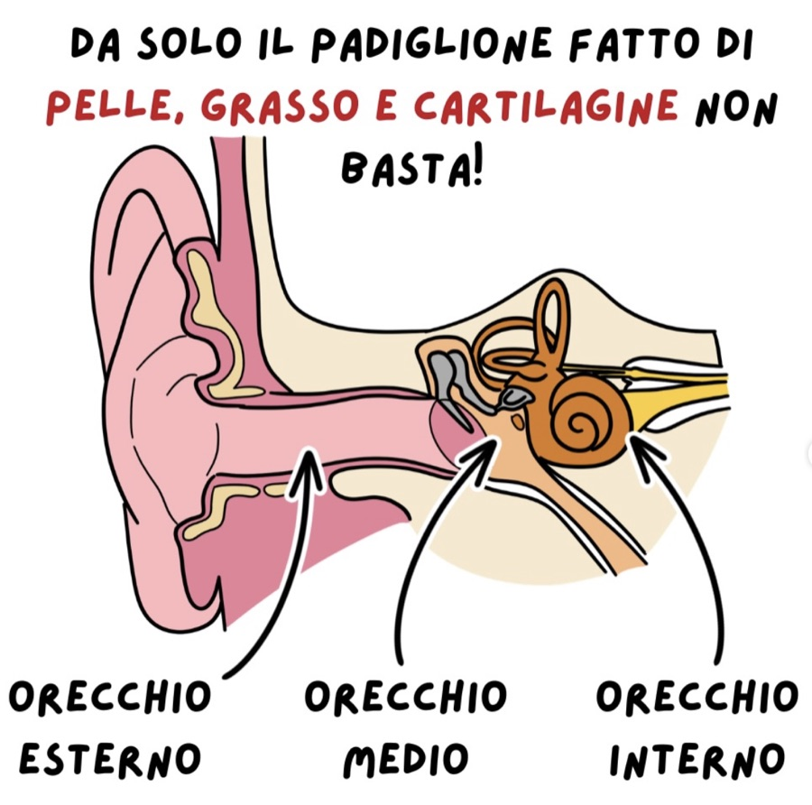
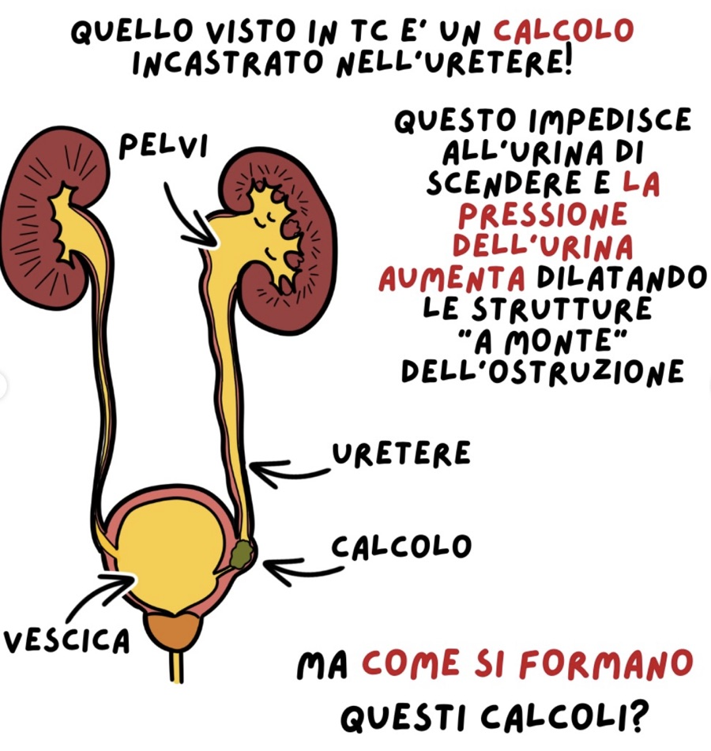
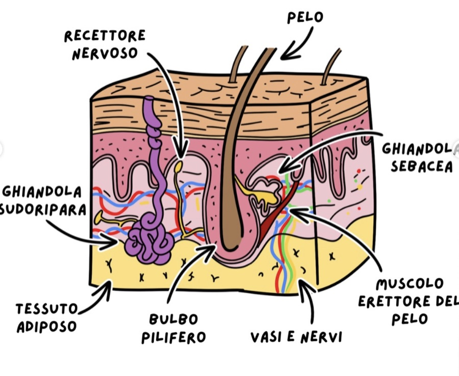

La Medicina illustrata
Strisce e vignette per raccontare la scienza delle immagini mediche con leggerezza. Aggiungi qui i tuoi fumetti man mano che li crei — ogni riquadro è una card che puoi duplicare.

Dentro l'orecchio
Un piccolo viaggio illustrato tra orecchio esterno, medio e interno per scoprire che, dietro al padiglione, c'è molto di più da osservare.
Guarda il post su Instagram
Quando un calcolo si blocca
Una vignetta per capire cosa succede quando un calcolo si incastra nell'uretere e perché le vie urinarie possono dilatarsi.
Guarda il post su Instagram
Sotto la pelle
Un disegno per guardare la cute da vicino: peli, ghiandole, recettori, vasi e nervi diventano una piccola mappa da esplorare.
Guarda il post su InstagramHai un'idea per un fumetto?
Se vuoi collaborare a una vignetta, una storia o un contenuto illustrato su medicina e scienza, scrivimi!
Proponi una collaborazioneVuoi vedere altri post?
Trovi altri fumetti, spiegazioni illustrate e nuovi contenuti sul profilo Instagram di FFRadiologica.
Vai su Instagram